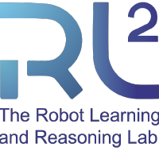
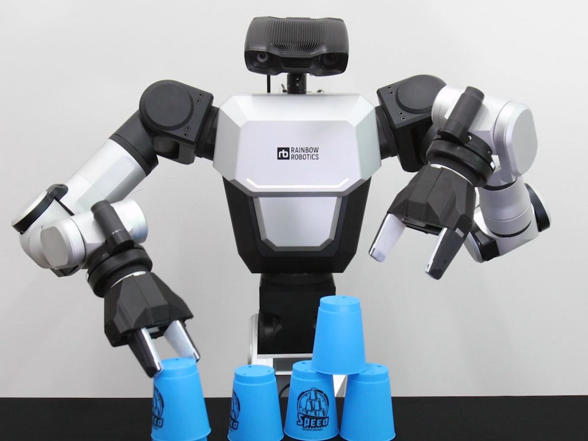
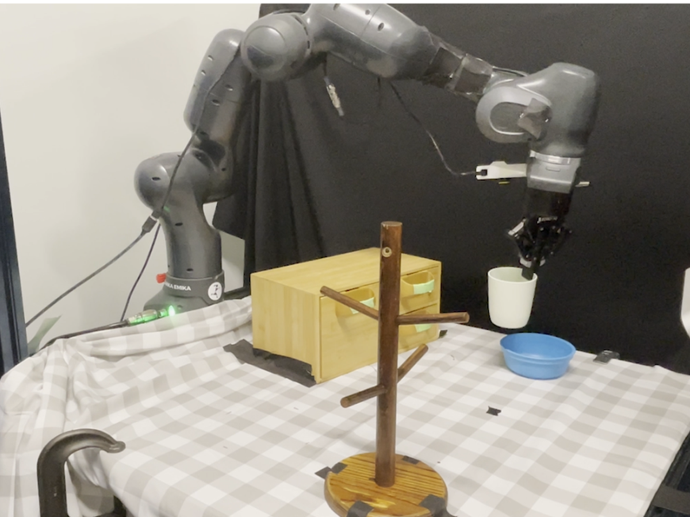
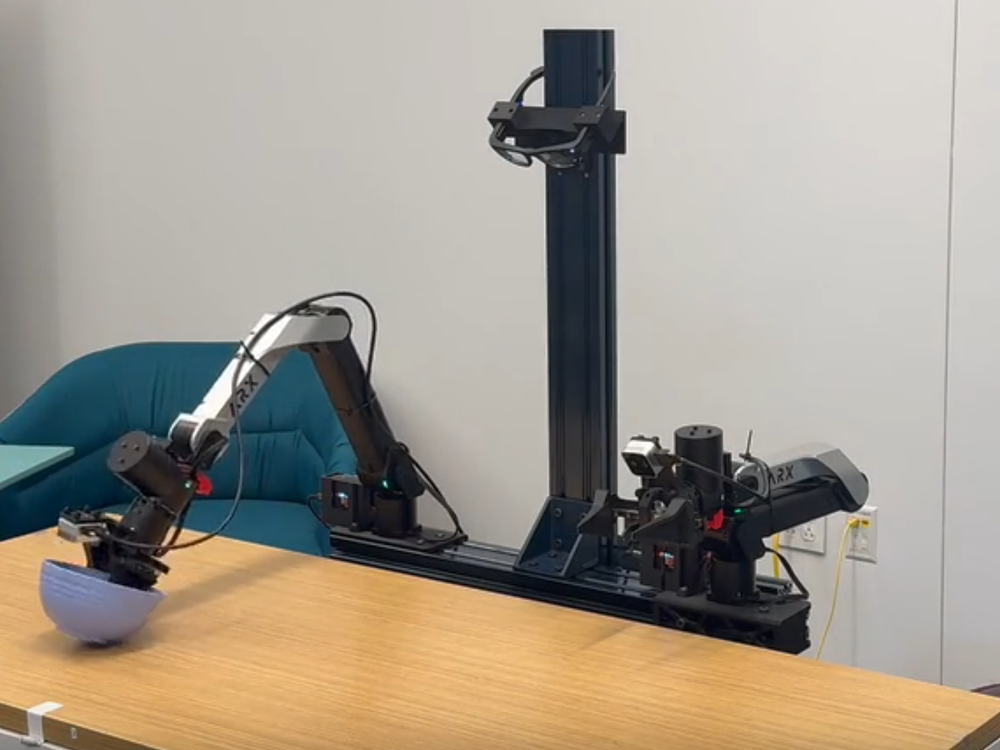

Compositional Visual Planning via Inference-Time Diffusion Scaling
International Conference on Learning Representations (ICLR), 2026

Master in Robotics, Georgia Institute of Technology
I am a Master’s student in Robotics at the Georgia Institute of Technology, working with Prof. Danfei Xu and Prof. Yongxin Chen. I maintain a GPA of 4.0/4.0 and expect to graduate in May 2026.
My research focuses on developing generative algorithms for long-horizon imitation learning and planning. I am particularly interested in compositional diffusion sampling methods that synthesize coherent long-horizon plans from short-horizon data. I also work on leveraging video-action models to improve policy learning through joint training with visual prediction and action generation.
Topics: Decision Making
International Conference on Learning Representations (ICLR), 2026

Python, C/C++, JavaScript, HTML/CSS, MATLAB.
PyTorch, multi-node multi-GPU training.
ROS, Gazebo, PyBullet, MuJoCo, SAPIEN.


